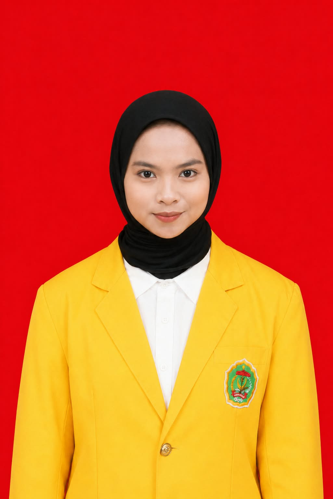

Saya adalah mahasiswa Informatika yang memiliki ketertarikan pada teknologi dan pengembangan website. Saya terus belajar untuk menambah pengetahuan, mengembangkan kemampuan, dan memperoleh pengalaman di bidang teknologi informasi.
Kenali Saya Pendidikan
Mengenal lebih jauh tentang diri saya.
Membangun pengetahuan dan pengalaman untuk menghadapi perkembangan teknologi.
Saya merupakan mahasiswa Program Studi Informatika di Universitas Cokroaminoto Palopo. Saya memiliki ketertarikan pada teknologi dan perkembangan sistem informasi berbasis digital.
Saya senang mempelajari hal-hal baru, terutama yang berkaitan dengan dunia komputer dan website. Melalui perkuliahan, saya berusaha meningkatkan pengetahuan serta memahami penerapan teknologi dalam kehidupan sehari-hari.
Perjalanan pendidikan saya.
Program Studi Informatika
Sekolah Menengah Atas
Sekolah Menengah Pertama
Sekolah Dasar
Silakan gunakan informasi di bawah ini untuk menghubungi saya.
Email
lolacahyani5@gmail.com
Instagram
@lchyn____
Lokasi
Palopo, Sulawesi Selatan